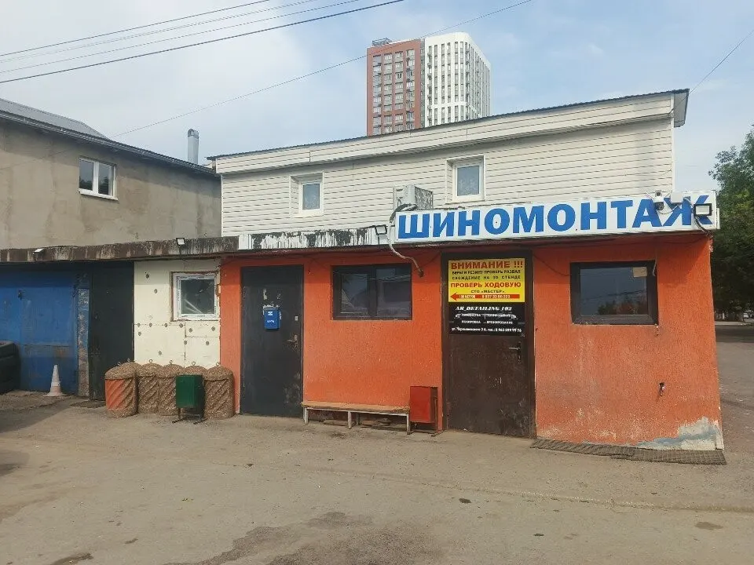
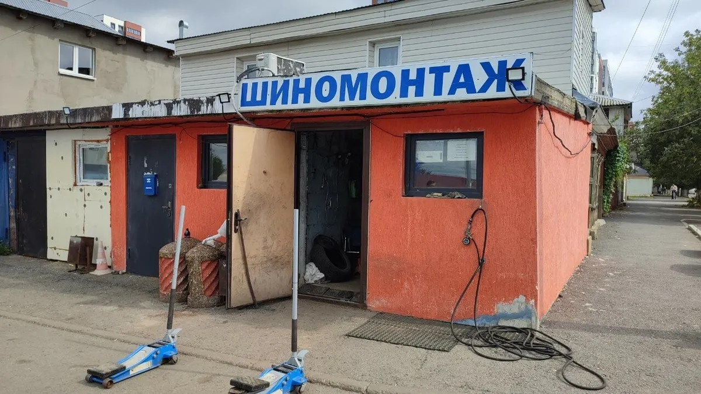
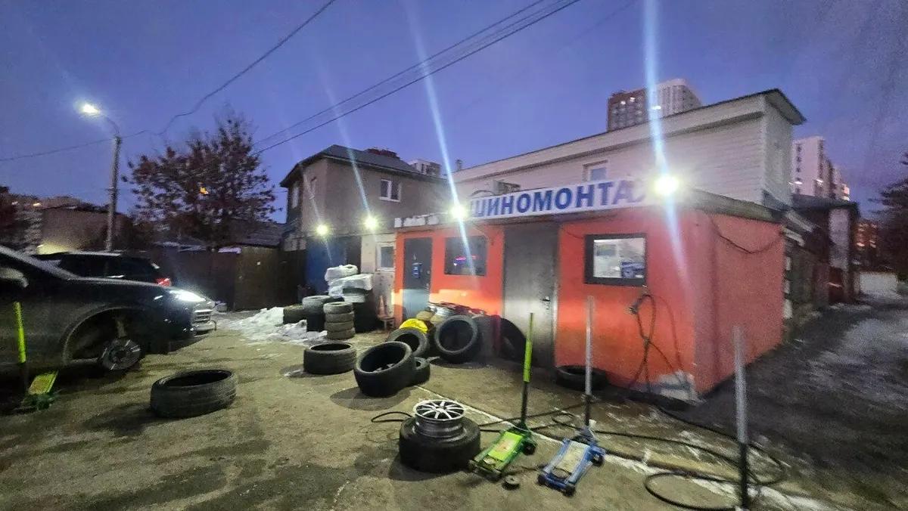
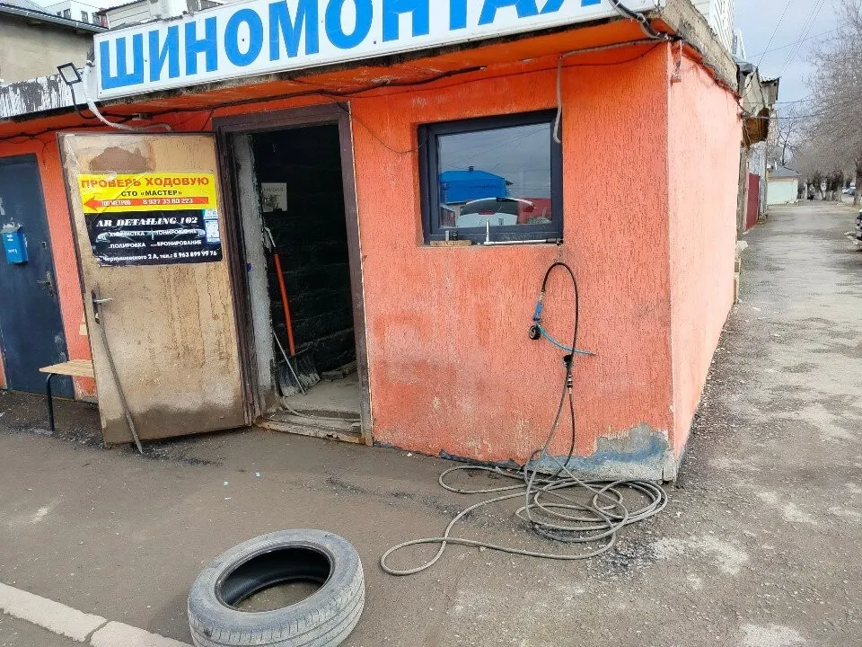

Шиномонтаж · Уфа
Шиномонтаж на Коммунистической: ремонт колёс в Уфе, ежедневно с 9 до 21
Переобувка, ремонт проколов и правка дисков - выберите услугу и время, запись в одном сообщении. Стоимость назовёт мастер.
- Запись одним сообщением
- Ждём: ежедневно, 09:00–21:00
- 4,8 и 59 отзывов на Яндекс.Картах

Услуги
Стоимость называем при записи: она зависит от размера колёс, типа дисков и объёма работ.
Что можно выбрать
- Ремонт проколовв отзывах: починили пробитое колесо очень быстроуточнить
- Правка дисковв отзывах: вытянули погнутый диск и покрутили на дископравеуточнить
- Боковой ремонт шиныв отзывах: приехал с боковым ремонтом, сделали на 5+уточнить
- Шиномонтаж и переобувкав отзывах: переобуваются здесь два раза в годуточнить
Как записаться
Пишете нам
Расскажите, какая машина и что нужно сделать, или выберите услугу, день и время в форме ниже.
Уточняем детали
Администратор подтверждает время и отвечает на вопросы.
Приезжаете
Адрес: Уфа, Коммунистическая улица, 3к1.



Что пишут гости
Быстро чинят проколы
В отзыве: «починил наше пробитое колесо очень-очень быстро».
Заезжают и проезжие
В отзыве: после ремонта диска владелец спокойно поехал обратно в Челябинск и ездит так до сих пор.
Советуют и делают скидки
В отзыве: отзывчивые ребята, делают скидки и подробно советуют, что нужно сделать.
Отзывы с Яндекс.Карт
«Отличный шиномонтаж, приветливый персонал, приехал туда с боковым ремонтом, всё сделали на 5+, езжу уже второй год, даже не заметно. После этого 2 раза тут переобуваюсь мне очень нравится. 100% рекомендую»
Руслан Шакиров · 3 июля 2025
«Отличная шинка. Парни прекрасно знают что делают. После таяния снега асфальт тоже решил растаять в некоторых местах и я погнул диск налетев на яму. Парни сначала вытянули, потом покрутили на дископраве. Поставили назад и спокойно поехал обратно в Челябинск и езжу так до сих пор, всё хорошо»
Александр Хисамов · 25 марта 2025
«Самый любимый мой шиномонтаж, ооооочень хорошие скидки делают, качественная работа, приветливые и вежливые рукастые ребята. Особенно я свою огромное спасибо хочу сказать Ришату - хозяину шиномонтажа за хорошую организацию работы.»
Халида Гилязева · 3 мая 2024
Отзывы с карточки на Яндекс.Картах.
Частые вопросы
Как записаться?
Выберите услугу, день и время в форме на странице или напишите в мессенджер. Администратор подтвердит запись.
Где вы находитесь?
Уфа, Коммунистическая улица, 3к1. ежедневно, 09:00–21:00.
Сколько это стоит?
Стоимость называем при записи: она зависит от размера колёс, типа дисков и объёма работ.
Выберите время - подтвердим запись
- Адрес
- Коммунистическая улица, 3к1, Уфа
- Часы
- ежедневно, 09:00–21:00
- Телефон
- +7 (903) 312-92-52